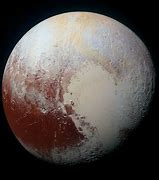

Pluton (oznaczenie oficjalne: (134340) Pluton – planeta karłowata, plutoid, najjaśniejszy obiekt Pasa Kuipera. Został odkryty w 1930 roku przez amerykańskiego astronoma Clyde’a Tombaugha. Od odkrycia do 2006 roku Pluton oficjalnie był uznawany za dziewiątą planetę Układu Słonecznego. 24 sierpnia 2006 roku Międzynarodowa Unia Astronomiczna odebrała Plutonowi status planety, co oznacza, że Układ Słoneczny składa się z 8 planet. Pluton należy do szerszej grupy obiektów transneptunowych. Płaszczyzna, po której się porusza, jest mocno nachylona do płaszczyzny ekliptyki, z silnie ekscentryczną orbitą, która częściowo przebiega bliżej Słońca niż orbita Neptuna. Plutona obiega co najmniej pięć księżyców, z których jeden, Charon, ma tylko o połowę mniejszą średnicę od niego.